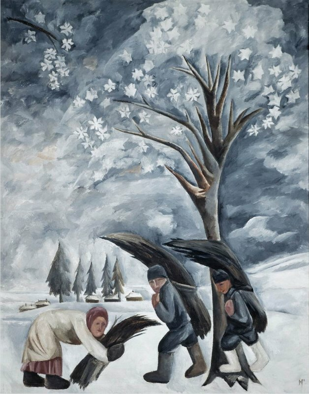

 <div style="text-align:left"><span style="font-size: medium;">Святой Иуда нагнал страху на побережье европейских морей. До Москвы не дошел – разве что свежим ветром повеяло от него. Но ветер и море – синонимы, мы уже поняли это раньше. И труд тоже синоним моря. Какое отношение имеет крестьянский труд к морю, спросите вы. А посмотрите на гончаровских сборщиков хвороста (1911).<br/><div style="text-align:center"></div><br/>Когда я увидел эту картину на выставке, подумал сначала, что там море, суровое зимнее море, смешанное с небом – сразу и не поймешь, где вода, а где тучи, и сборщики хвороста – как суденышки, которые и живут от моря, и страдают от него. Согбенные люди, склоненные паруса – тяжкий человеческий труд... <br/><br/>Цветаева в разговоре с Гончаровой не могла не заговорить о море<br/><br/><a name="cutid1"></a> <p style="margin: 0cm 0cm 0pt 6cm;"><br/> <span style="font-size: medium;">Первое ее мне слово о море было: «очарование»... «Да, именно очарование». И в ответ мое узнавание: где? когда? у кого? Вот так, вместе: море и очарование. Ведь ушами слышала! И в ответ, именно ушами слышанное, – ведь с семи лет говорила наизусть:<br/></span></p><p style="margin: 0cm 0cm 0pt 12cm;"><br/>Ты ждал, ты звал, я был окован,<br/>		Вотще рвалась душа моя!<br/>		Могучей страстью очарован,<br/>		У берегов остался я.</p><p style="margin: 0cm 0cm 0pt 6cm;"><br/> <span style="font-size: medium;"><br/>…И вдруг Гончарова со своим очарованием. Еще одно соответствие. В чем гениальность пушкинского четверостишия? В непредвиденности словоряда третьей строки. Могучей страстью, да еще очарован. Зачарованность мощью. Непредвиденность эпитета могучей и страсти и непредвиденность понятия очарованности мощью.</span></p><br/>Но не только очарование. Цветаева не была бы Цветаевой. если бы не вытрясла из своей собеседницы все ее пристрастия и страхи. И среди них – страх океана. Вот какую историю мы узнаём из той цветаевской поэмы в прозе:<br/><p style="margin: 0cm 0cm 0pt 6cm;"><br/> <span style="font-size: medium;">...Двенадцать холстов сгорели, а один канул. Уже за границей Гончарова пишет для своей приятельницы икону Спасителя, большую, створчатую, вокруг евангелисты в виде зверей. Икона остается мужу. Муж разоряется и продает. «Потом встретились, неловко спросить: кому? Может быть – скорее всего, в Америку. Где-нибудь да есть». – И Вы ничего не сделали, чтобы... – «Нет. Когда вещь пропадает, я никогда не ищу. Как-нибудь, да объявится. Да не все ли равно – если в Америку. Я в Америке никогда не буду». – Боитесь воды? – «И Америки. Вещей я много своих провожала. Заколачиваю ящик и знаю: навек». – Как в гроб на тот свет? – «Да и есть – тот свет. Ну, еще одного проводила».<br/><br/>Страх воды. Страсть к морю. Но в Америку не через море, а через океан, всю воду, всю бездну, все понятие воды. И, мнится мне, не только воды, а символа Америки – парохода боится, Титаника, с его коварством комфорта и устойчивости в устроенности. Водного Вавилона, Левиафана боится, который и есть пароход[ - Уже по написании узнаю, что пароход Левиафан – есть. (Имел честь отвозить Линдберга.) Остается поздравить крестного (примеч. М. Цветаевой.)]. Старый страх, апокалипсический страх, крестьянский страх. – «Чтоб я – да на эдакой махине...» Лучше – доска, проще – две руки. Скромнее – вернее.<br/>		</span></p><p style="margin: 0cm 0cm 0pt 12cm;"><br/> <span style="font-size: medium;">Смиренный парус рыбарей,<br/>		Твоею прихотью хранимый,<br/>		Скользит отважно средь зыбей,<br/>		Но ты взыграл, неодолимый,<br/>		И стая тонет кораблей!</span></p><br/><p style="margin: 0cm 0cm 0pt 6cm;"><br/> <span style="font-size: medium;">Океана в России не было, было море, мечта о нем. Любовь к морю, живому, земному, среди-земному, и любовь к океану – разное. Любовь к морю Гончаровой и русского народа есть продолженная любовь к земле – к землям за, к морю – заморью. Любовь к морю у русского народа есть любовь к новым землям. А здесь и этого утешения нет. Нью-Йорк (куда зовет ее слава) еще меньше земля, чем океан.<br/><br/>Ненависть крестьянского континента России к «месту пусту» – океану, ненависть крестьянина к безделью. Океан не цветет и не работает. А если и цветет (коралл, например), то мертвое цветение, вроде инея.</span></p><br/><br/>Сейчас последует длинная цитата из Марины Цветаевой. Без купюр, без комментариев. Просто – Цветаева о море и о Гончаровой. Много символического, мало фактического. Но абсолютное: «<b>МОРСКОЕ, ВОТ ЧТО ВЗЯЛА ГОНЧАРОВА ОТ МОРЯ</b>.»<br/><br/><br/>«Как же отразилось живое земное море с серебряными мальчиками в вещах Гончаровой? Как и следовало ожидать – косвенно. То, что я как-то сказала о поэте, можно сказать о каждом творчестве: угол падения не равен углу отражения. Так устроены творческий глаз и слух. Отразилось, но не прямо, не темой, не тем же. Не отразилось, а преобразилось. Морем не стало и не осталось, превратилось в собственное качество: морской (воздух, цвет, свет, чистота).<br/><br/>Море в взволнованной им Гончаровой отразилось как Гончарова в взволнованном нам – извилиной.<br/><br/>Что такое человеческое творчество? Ответный удар, больше ничего. Вещь в меня ударяет, а я отвечаю, отдаряю. Либо вещь меня спрашивает, я отвечаю. Либо перед ответом вещи, ставлю вопрос. Всегда диалог, поединок, схватка, борьба, взаимодействие. Вещь задает загадку. Ну – синее, ну – чистое, ну – соленое, – в чем тайна? Под кистью – ответ. Ответ или поиски ответа, третье, новое, возникшее из море и я. Отраженный удар, а не вещь.<br/><br/>Отражать – повторять. Мы можем только отобразить. Думающие же, что отражают, повторяют, пишут с («ты шуми смирно, а я попишу»), только искажают до жуткой и мертвой неузнаваемости. Ибо, если ты хочешь дать это море, настоящее, синее, соленое, точь-в-точь, как есть, – предположим, удалась синева – где же соль? Удалась соль (!), где же шум? Тогда я уже буду требовать с тебя, как с Бога. Море – и все качества! Никакого моря не хочу дать, не могу дать. Не дать, а отгадать, что за солью, синью, шумом. Беззащитность перед ударом (дара). Единственное, что хочу дать, – вещи ударить в себя и, устояв, отдать. Воздать.<br/><br/>Дар отдачи. Благодарность.<br/><br/>«Темы моря – нет, ни одного моря, кажется... Но – свет, но – цвет, но та – чистота...»<br/><br/>Морское, вот что взяла Гончарова от моря.<br/><br/>Что такое морское по отношению к морю? То, без чего вещь не была бы собой, обусловливающее ее, существенное – роковое – качество. Соль на соленость, море на морскость обречены, иначе их нет. Море по отношению к соли понятие усложненное, но безотносительно соли такое же единство, как соль. Ибо «морское» не сумма соли, синевы, чистоты, запаха и прочих свойств, а особое новое свойство, недробимое – хотелось бы сказать: сплошное «и прочее» все возможности моря (ограниченного) – безграничные.<br/><br/>И еще: обусловливающее вещь свойство больше самой вещи, шире ее, вечнее ее, единственная ее надежда на вечность. Морское больше, чем море, ибо морским может быть все и морское может быть всем. «Морское» – та дорога, по которой вещь выходит из себя, неустанно оставляя себя позади, неминуемо отражая. – Перерастая. Морю никогда не угнаться за морским, если оно, отказавшись от только – моря, не перейдет в собственное роковое свойство. Тогда оно само у себя позади и само впереди. Выход, исход, уход, увод. По дороге собственного рокового свойства вещь уходит в мир, размыкается. Разомкнутый тупик самости. Это ведь разное – обреченность на себя, как таковое, и обреченность на свое, не имеющее пределов, знакомо-незнакомое, как поэтический дар для поэта. Не будь море морским и Бог божественным, море давно бы высохло, а Бог давно бы иссяк. И еще: божественное может без Бога, а Бог без божественного нет. Бога без божественного – нет. Божественное Бога включает, не называя, нужды не имея в имени, ибо не только его обусловливающее роковое свойство, но и его же выдыхание. Бог раз вздохнул свободно, и получилось божественное, которое он прекратить не волен. (Свет с тех солнц идет не х лет, а вечно заставляя солнца гореть.)<br/><br/>Исконно-крестьянско-морское, таков состав первой Гончаровой. Тот же складень в три створки.<br/><br/>Икона, крестьянство, Заморье – Русь, Русь и Русь.»</span></div> 